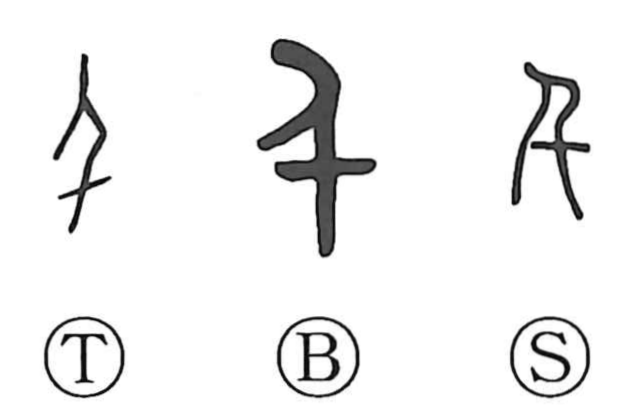

千

Kun: chi | On: sen
thousand
Explanation
千 is formed on 人, a person, which supplies its sound. Early writing adds a thickened mark near the figure's lower part to distinguish the numeral from the ordinary human sign.
Oracle-bone forms for two thousand and three thousand add two or three horizontal strokes in the same lower position. The repeated pattern shows that the human figure remains the base of the numerical writing.
千 means a thousand and, by extension, a great many or many times. The old sound relationships are wider than the modern Japanese readings suggest: bronze inscriptions can also use 人 where 年 is expected. The sound relationship connects the human base with the numerical word.